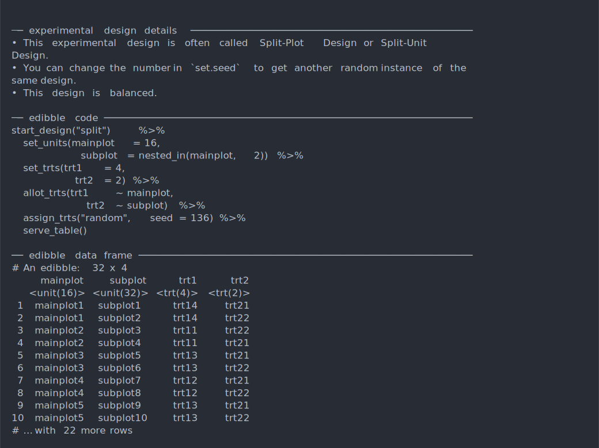

While named experimental designs can be muddling to understanding the experimental structure, it is still convenient to be able to concisely describe common structures.
In edibble, some named experimental designs can be constructed using the make_classical function. The classical named designs that are supported now is:
find_classical_names()
#>
#> ── edibble ──
#>
#> ● crd with the arguments t, n, and r for a Completely Randomised Design.
#> ● factorial with the arguments trt, n, and r for a Factorial Design.
#> ● rcbd with the arguments t, b, r, and n for a Randomised Complete Block
#> Design.
#> ● split with the arguments t1, t2, and r for a Split-Plot Design or a
#> Split-Unit Design.The output contains information about the design, the code to generate the design using edibble that can be easily copy-and-pasted and the output data frame. If you want the edibble code alone then you can just use code_classical.
make_classical("crd", n = 30, t = 5)
#>
#> ── experimental design details ─────────────────────────────────────────────────
#> ◯ This experimental design is often called Completely Randomised Design.
#> ◯ You can change the number in `set.seed` to get another random instance of
#> the same design.
#> ◯ This design has a total of 30 units testing a total of 5 treatments.
#> The following information is only true for the chosen parameters and not
#> necessary true for all Completely Randomised Designs.
#> ─ This design is balanced for the given numbers.
#>
#> ── edibble code ────────────────────────────────────────────────────────────────
#> set.seed(93)
#> start_design("crd") %>%
#> set_units(unit = 30) %>%
#> set_trts(treat = 5) %>%
#> allocate_trts(treat ~ unit) %>%
#> randomise_trts() %>%
#> serve_table()
#>
#> ── edibble data frame ──────────────────────────────────────────────────────────
#> # An edibble: 30 x 2
#> unit treat
#> <unit(30)> <trt(5)>
#> 1 unit1 treat2
#> 2 unit2 treat4
#> 3 unit3 treat4
#> 4 unit4 treat3
#> 5 unit5 treat5
#> 6 unit6 treat5
#> 7 unit7 treat2
#> 8 unit8 treat4
#> 9 unit9 treat1
#> 10 unit10 treat5
#> # … with 20 more rows
code_classical("rcbd", t = 4, n = 40)
#> set.seed(707)
#> start_design("rcbd") %>%
#> set_units(block = 7,
#> unit = nested_in(block, 4)) %>%
#> set_trts(treat = 4) %>%
#> allocate_trts(treat ~ unit) %>%
#> randomise_trts() %>%
#> serve_table()The terminal output has color. You can see the terminal output below for the Split-plot design.
make_classical("split", t1 = 4, t2 = 2, r = 4)